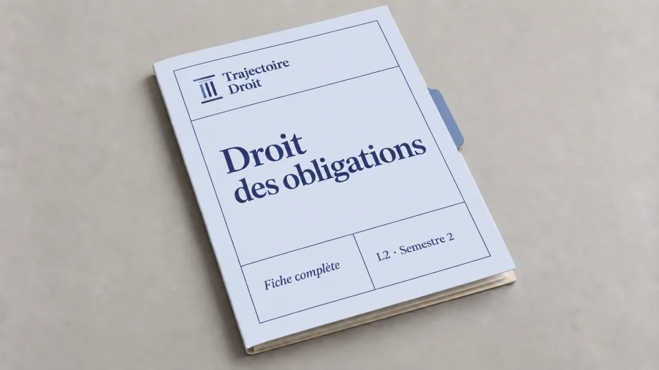
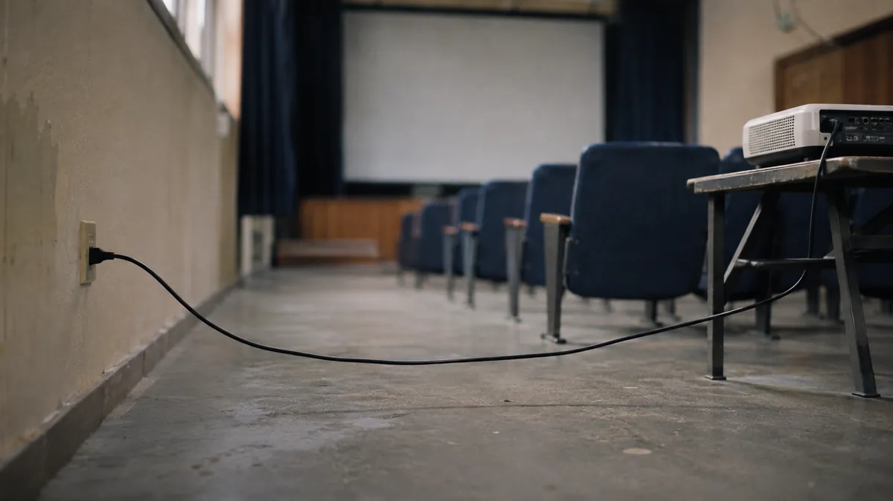

Sujets de responsabilité civile L2 avec un cas pratique corrigé
Ces douze sujets de responsabilité civile L2 couvrent les principaux exercices du partiel. Dans le cas corrigé, une visiteuse se blesse en trébuchant sur le câble d’un projecteur. Tu vois comment établir la responsabilité de l’association, puis distinguer les frais de soins d’une chance perdue de jouer un concert rémunéré.

Droit des obligations L2, semestre 2
La fiche du cours et le recueil de cas pratiques corrigés
La fiche complète de 91 pages expose les conditions de la responsabilité civile, ses régimes spéciaux et les règles communes aux obligations. Le recueil de 115 pages, vendu séparément, montre comment appliquer ces règles quand un même énoncé pose des questions de faute, de garde ou de causalité.
- Les conditions et les arrêts expliqués dans la fiche pour reprendre un point précis du cours
- Dix cas et trois sujets types de partiel dans le recueil pour refaire les exercices avant de lire leurs corrigés
- Un accès immédiat au PDF choisi après le paiement
Si tu hésites entre les deux PDF, la page du droit des obligations L2 présente les supports par semestre. Le catalogue des fiches complètes permet aussi de retrouver la fiche vendue à l’unité.

Douze sujets pour préparer ton partiel de responsabilité civile
Les mentions de TD indiquent la provenance de l’exercice. Les situations sont reformulées et les énoncés de faculté restent distincts des exercices rédigés pour cette page. Quand un sujet part d’une décision, l’indication sous le titre te permet de retrouver le texte à lire.
Choisis une ligne qui correspond à ton programme, puis écris la question que la victime veut résoudre. L’indication de la dernière colonne aide à vérifier ton brouillon. Par exemple, si une sortie en mer cause deux blessures, il faut déterminer quelle suite d’événements explique chacune d’elles avant de discuter la réparation.
| Sujet | Travail demandé | Ce qu’il faut vérifier dans ta copie |
|---|---|---|
| Le dommage et sa cause | ||
| 1. Deux blessures pendant une sortie en mer D’après le TD 17 de Paris-Panthéon-Assas, L2, 2025-2026 | Une passagère se tord la cheville en tombant, car le bruit d’une bouteille qu’on ouvre à bord la fait sursauter. Le bateau tangue plus tard et un cadre lui tombe sur la tête. Relie chaque blessure aux faits qui l’expliquent. | Décris les événements qui expliquent chaque blessure. Si l’entorse a empêché la passagère d’éviter le choc à la tête, explique comment le premier accident a contribué à la seconde blessure. |
| 2. Les préjudices à distinguer après un décès D’après la correction du partiel du 28 mars 2020, L2 | Lis l’arrêt du 20 octobre 2016. Le mari et le fils d’une femme tuée lors d’une agression demandent réparation. Sépare ce qu’ils réclament pour eux-mêmes et ce qu’ils demandent au titre des droits transmis par la victime. | Dans cet arrêt, que change la conscience que la victime avait de sa mort prochaine ? Explique pourquoi les juges distinguent cette souffrance de la perte de la vie elle-même. |
| 3. Un chantier et une fissure Exercice d’entraînement | Après des travaux chez un voisin, un propriétaire remarque une large fissure dans son mur. Une ancienne photo montre une fissure plus fine au même endroit. Écris les deux questions qu’une expertise devrait aider à résoudre. | Distingue l’existence de la fissure et son aggravation. Cherche quelle partie des travaux pourrait expliquer l’aggravation et quels éléments permettraient d’écarter une évolution déjà en cours. |
| La personne à qui demander réparation | ||
| 4. Un commerçant invoque le bail auquel il est étranger TD de Montpellier, commentaire de l’arrêt Boot Shop | Lis l’arrêt de l’assemblée plénière du 6 octobre 2006. Présente les personnes liées par le bail, puis explique sur quel fondement le locataire-gérant peut demander réparation au bailleur. | Le contrat sert à identifier l’obligation d’entretien qui a été méconnue. Il faut encore dire en quoi ce manquement a causé le dommage du locataire-gérant, qui n’est pas partie au bail. |
| 5. Une chute dans un passage verglacé Entraînement à partir de l’arrêt du 15 juin 2023 | Un invité tombe sur un accès resté ouvert. Un autre passage avait été déneigé. Lis l’arrêt de la deuxième chambre civile et relève les faits qui permettent de retenir le rôle du sol dans la chute. | Compare l’état du passage avec l’usage auquel il était destiné. La présence d’un autre accès compte dans la discussion, mais elle ne dit pas à elle seule si le passage utilisé était fermé ou dangereux. |
| 6. Une barrière empruntée pour une fête de quartier Exercice d’entraînement | Pour délimiter l’entrée d’une fête, l’organisateur utilise une barrière que lui prête une association. Il choisit où la placer et peut la déplacer seul. Après la chute de la barrière sur une passante, rédige la partie du cas pratique consacrée à la garde. | Décris qui se servait de la barrière, décidait de son emplacement et pouvait la déplacer au moment de la chute. Le prêt est utile parce qu’il peut modifier ces pouvoirs, même si le propriétaire reste le même. |
| 7. Un enfant heurte un camarade pendant un jeu D’après un énoncé de cas pratique, adapté au texte actuel | En septembre 2026, un enfant de huit ans blesse un camarade en jouant. Ses parents sont séparés et exercent ensemble l’autorité parentale. Aucune décision administrative ou judiciaire n’a confié l’enfant à un tiers. | Applique l’article 1242 du Code civil à la date des faits. Cherche si la victime peut demander réparation à l’un ou l’autre parent sans avoir à prouver une faute de leur part. |
| 8. Un livreur à pied blesse une passante Exercice d’entraînement | Pendant une livraison confiée par son employeur, un salarié pousse un chariot sur le trottoir et heurte une passante. L’employeur soutient qu’il lui avait demandé d’utiliser l’entrée de service. Indique quel fait il faut discuter pour examiner sa responsabilité. | Précise quelle mission le salarié accomplissait au moment du choc. Compare le fait de prendre une entrée différente et l’hypothèse où il aurait utilisé le chariot pour un déménagement personnel. Les deux situations posent une question différente sur le rapport entre l’acte et les fonctions. |
| Le régime à choisir et la part du dommage à réparer | ||
| 9. Un camion équipé d’un monte-charge et un accident dans la rue D’après un TD sur les accidents de la circulation, UPA | Lorsqu’un camion garé prend feu après la surchauffe de son monte-charge, un motard s’en écarte et heurte une voiture. L’automobiliste freine, puis heurte un cycliste. Sépare les événements avant de lire la loi du 5 juillet 1985. | Cherche quels véhicules sont impliqués et à quel accident se rattache la blessure du cycliste. Pour le camion, distingue le rôle du monte-charge et celui du camion en feu dans la manœuvre du motard. |
| 10. Une batterie se met à chauffer pendant la charge Exercice d’entraînement | Le propriétaire d’une batterie utilise le chargeur prévu par la notice. La batterie s’enflamme et cause 700 € de dégâts à une étagère. Vérifie si la victime peut agir sur le fondement de la responsabilité du fait des produits défectueux. | Compare les dégâts à l’étagère au seuil de 500 € pour les dommages matériels. Examine ensuite la sécurité attendue de la batterie et les éléments qui relient son défaut éventuel à l’incendie. |
| 11. Un visiteur franchit un passage fermé Exercice d’entraînement | Le propriétaire ferme une allée où il fait creuser une tranchée. Un visiteur franchit la barrière et se blesse en tombant dans la tranchée. Sépare ce qui concerne le rôle de l’allée et ce qui concerne la conduite du visiteur. | Décris le danger et ce que le visiteur pouvait voir. Si son comportement a contribué à la chute, vérifie si sa faute peut limiter la réparation. Pour discuter la force majeure, demande-toi si le gardien pouvait prévoir le franchissement et l’empêcher. |
| 12. Le câble dans l’allée Cas original, corrigé sur cette page | Une visiteuse se blesse dans une salle de projection. Elle engage des frais de soins et ne peut plus se présenter à une audition. Lis l’énoncé et rédige tes trois réponses avant d’ouvrir le corrigé. | Le câble était immobile. Cherche quel détail prouve qu’il a causé la chute et qui pouvait le déplacer. Puis traite séparément les frais déjà exposés et la possibilité de décrocher le concert. |
Pour reprendre le programme entre deux exercices, utilise le guide de responsabilité civile L2. Il classe les fondements et les arrêts par régime. Tu peux ainsi retrouver le chapitre qui te manque avant de refaire un sujet.
Cas pratique corrigé, une chute dans une salle de projection
L’énoncé
Une association organise une projection de films en accès libre dans son local, sans billet ni inscription. Camille y entre sans conclure de contrat avec l’association. Pour alimenter le projecteur, l’équipe a branché une rallonge dont elle choisit le trajet et qu’elle peut déplacer ou débrancher.
L’allée centrale reste ouverte aux visiteurs. Un câble sans protection la traverse à quelques centimètres du sol, sur le chemin qui mène aux sièges. Un visiteur photographie le câble tendu d’un bord à l’autre quelques instants avant la chute.
Camille suit l’allée et sa chaussure se prend dans le câble immobile, sous les yeux d’un témoin. Elle tombe alors et se fracture le poignet.
Un médecin constate la fracture et lui prescrit dix jours sans jouer du violon. Les soins laissent à sa charge 120 €, qu’elle a réglés.
Camille avait été retenue avec trois autres violonistes pour la dernière audition d’un concert. La personne choisie devait toucher un cachet de 600 €.
L’audition a lieu trois jours après l’accident. Comme l’organisateur choisit l’interprète ce jour-là et ne peut pas reporter l’audition, il faut jouer devant lui à cette date pour rester en lice. Camille veut savoir ce qu’elle peut demander à l’association.
Le brouillon, trois repères directement sur le sujet
À la lecture, mets des crochets autour du passage qui pose une question. Trace ensuite une flèche et note quelques mots dans la marge. Tu peux aussi numéroter les crochets. Ainsi, tu retrouves l’ordre des réponses sur l’énoncé, puis les faits à reprendre quand tu rédiges chacune d’elles.
- [Le câble traverse l’allée et la chaussure de Camille s’y prend] → Le rôle du câble et la personne qui décide de son emplacement
- [La blessure entraîne 120 € de frais à sa charge] → Les dépenses liées à la chute
- [La dernière audition a lieu pendant l’arrêt du violon] → La chance de jouer le concert
Les crochets restent sur le sujet. Au brouillon, il faut donc surtout préparer les règles à appliquer et revenir à l’énoncé pour vérifier les dates. Par exemple, le troisième repère permet de comparer les dix jours pendant lesquels Camille ne peut pas jouer avec la date que l’organisateur a fixée.
1. La responsabilité de l’association pour la chute
Faits utiles. Une visiteuse chute après que sa chaussure s’est prise dans un câble immobile dont l’association réglait l’emplacement. Comme aucun contrat ne les lie, la visiteuse demande réparation sur le terrain extracontractuel.
Question de droit. Dans quelles conditions une visiteuse peut-elle demander à l’association de répondre d’une chute liée à un câble immobile ?
Rappel du droit applicable. Selon l’article 1242, alinéa 1 du Code civil, le gardien répond du dommage causé par la chose qu’il garde. Ce régime permet donc de demander réparation sans avoir à prouver que le gardien a commis une faute. Il faut en revanche vérifier les trois points suivants.
La garde. Le gardien est celui qui exerce l’usage, la direction et le contrôle de la chose. Il faut donc établir qui pouvait s’en servir et décider de son emplacement au moment de l’accident.
Le rôle de la chose dans l’accident. Quand la chose est immobile, le simple contact ne suffit pas. La victime doit donc établir ce qui rendait la chose anormale et expliquer en quoi ce détail a contribué à l’accident. Par exemple, dans un arrêt du 15 juin 2023, la deuxième chambre civile de la Cour de cassation a confirmé que le sol du passage avait joué un rôle dans la chute. Du verglas caché sous la neige le rendait anormalement glissant pour un accès piéton resté ouvert.
Le dommage et son lien avec l’accident. La victime doit enfin établir l’atteinte subie et montrer qu’elle vient de l’accident dont la chose a été l’instrument. Les conséquences à réparer se discutent ensuite une par une.
Application aux faits.
L’association a la garde de la rallonge. En effet, elle se sert de la rallonge pour alimenter son projecteur et son équipe choisit où elle la fait passer. Les personnes chargées de la projection peuvent également la débrancher ou la déplacer pour le compte de l’association. Ces faits établissent qu’elle exerçait l’usage, la direction et le contrôle au moment de la chute.
La position du câble explique la chute. Le câble est immobile, mais il traverse une allée ouverte, tendu au-dessus du sol sans protection. Cette position crée donc un obstacle sur le chemin des visiteurs.
La photographie prise avant la chute montre où passait le câble. Le témoin confirme que la chaussure de Camille s’y est prise. Ensemble, ces preuves montrent la position anormale du câble et son rôle dans la chute.
La fracture vient de la chute. Camille tombe au moment où sa chaussure se prend dans le câble et se fracture le poignet en tombant. Le témoignage et les éléments médicaux permettent ainsi de relier la fracture à la chute.
Conclusion. Camille peut demander à l’association, qui gardait le câble, de réparer les conséquences de la chute causée par le câble tendu dans l’allée.
2. Les frais de soins restés à sa charge
Faits utiles. Les soins de la fracture ont laissé une dépense de 120 € à la charge de Camille.
Question de droit. La victime peut-elle demander le remboursement de la part des frais de soins qu’elle a réglée après la prise en charge ?
Rappel du droit applicable. La réparation doit couvrir les conséquences du dommage, sans perte ni profit pour la victime. Les frais de soins constituent un préjudice patrimonial, car la personne blessée a dû dépenser de l’argent pour se soigner. Pour rattacher ces frais à l’accident, il faut établir que les soins concernent la blessure en cause. Il faut ensuite distinguer la part déjà prise en charge et la dépense supportée par la victime. Les documents de soins et de remboursement peuvent servir à chiffrer cette part.
Application aux faits. Les soins ont été nécessaires à cause de la fracture survenue lors de la chute. Le cas précise en outre que la somme de 120 € correspond au reste à charge, après remboursement. Camille demande donc le remboursement d’une dépense déjà supportée pour cette blessure. La somme ne dépend pas du résultat de l’audition.
Conclusion. Camille peut demander 120 € au titre des frais de soins restés à sa charge.
3. La chance de jouer dans le concert rémunéré
Faits utiles. Camille avait obtenu une place à la dernière audition, mais sa blessure l’empêche d’y jouer. L’organisateur maintient la date et doit choisir un interprète.
Question de droit. Comment évaluer le préjudice d’une personne que sa blessure a privée d’une audition pour un concert rémunéré ?
Rappel du droit applicable. La perte de chance est un préjudice réparable lorsqu’une possibilité réelle d’obtenir un avantage a disparu de façon certaine. Pour établir ce préjudice, il faut donc vérifier deux points avant de chiffrer la réparation.
Une possibilité favorable existait avant l’accident. La victime doit montrer ce qui lui donnait une chance d’obtenir le gain. La sélection pour une étape finale, par exemple, permet d’apprécier la réalité de cette possibilité.
L’accident a fait disparaître cette possibilité. Il faut donc vérifier que l’accident a privé la victime de la possibilité d’obtenir l’avantage. Dans un arrêt du 21 novembre 2006, la première chambre civile a cassé la décision qui indemnisait les clients d’un avocat. En effet, ils pouvaient encore former un pourvoi en cassation, car l’acte qui leur avait notifié la décision indiquait un délai erroné.
Une fois la chance perdue établie, le gain espéré sert de base au calcul et l’indemnité correspond à la part de ce gain que représente la chance. Dans l’arrêt du 27 juin 2025, l’assemblée plénière applique ce calcul à la chance d’éviter un dommage. Lorsque le dommage entier ne peut pas être réparé, l’indemnité couvre alors une part de ce dommage, proportionnée à la chance qu’avait la victime de l’éviter.
Application aux faits.
Camille était déjà finaliste. L’organisateur avait retenu sa candidature parmi les quatre dernières. Il restait donc une décision de sélection, mais Camille avait franchi les étapes précédentes. Cette sélection fournit un fait précis pour établir qu’elle pouvait décrocher le concert.
La blessure lui fait perdre l’audition. L’arrêt du violon dure dix jours, tandis que l’épreuve et le choix de l’interprète ont lieu trois jours après la chute. Comme l’organisateur ne propose aucun report, la fracture prive Camille de la possibilité de jouer devant lui.
Le cachet de 600 € donne le montant de la rémunération proposée à la personne sélectionnée. Pour évaluer la chance de Camille, il faudrait donc regarder les critères de sélection et les éléments disponibles sur sa candidature. Quatre finalistes pour une place ne donnent pas automatiquement quatre chances égales. En copie, si le sujet ne donne rien de plus sur leur niveau, il faut expliquer comment l’indemnité se calcule et laisser le montant ouvert.
Conclusion. Camille peut demander une indemnité pour la chance perdue de décrocher le concert, évaluée en fonction de ses chances d’être retenue.
Que change un câble rangé ou une audition reportée ?
Reprends le corrigé en ne changeant qu’un fait à la fois. Ainsi, tu vois quelle condition doit être réexaminée et lesquelles restent établies.
La photo montre le câble rangé contre le mur
La photo prise avant la chute montre cette fois le câble fixé le long du mur, hors du passage. Le témoin dit toujours que la chaussure de Camille s’est prise dans le câble. Il faut donc vérifier si la rallonge était encore contre le mur quand Camille est tombée et comment elle a pu la toucher.
L’association peut toujours avoir la garde de la rallonge. Toutefois, si Camille ne prouve pas que le câble a joué un rôle dans sa chute, elle ne peut pas obtenir sur ce fondement la réparation des frais de soins ni celle de la chance perdue. Le guide sur la garde et le rôle de la chose sépare les deux vérifications.
Dans un arrêt du 28 mai 2026, un témoin avait indiqué qu’un homme était monté à une échelle, mais il ne pouvait pas dire si elle avait basculé en le faisant tomber. La deuxième chambre civile a confirmé que les éléments apportés par la victime ne suffisaient pas à établir une position anormale de l’échelle.
Une audition de remplacement reste possible
Si l’organisateur propose à Camille une audition après sa guérison, avec la même place encore ouverte et les mêmes critères, elle peut toujours tenter de décrocher le concert. La seule absence à la première date ne suffit donc plus à établir qu’elle a perdu cette possibilité. En revanche, l’accident a déjà entraîné les soins et leurs frais.
Dans ta copie, reprends chaque demande séparément. Camille a encore la possibilité d’être choisie pour le concert. Elle peut toujours demander les 120 € déjà dépensés pour ses soins, puisque rien n’a changé dans les circonstances de la chute.
Trois erreurs sur le responsable et le montant de la réparation
Donner le nom du propriétaire et s’arrêter là
Le nom indiqué sur la facture permet de savoir qui a acheté l’objet. Si ton énoncé précise que l’acheteur l’a confié à quelqu’un, il faut ensuite regarder qui décidait de son utilisation au moment de l’accident. Pour la barrière de l’exercice 6, le prêt compte parce que l’organisateur pouvait choisir l’endroit où la placer et la déplacer seul.
Indemniser la rémunération entière parce que la candidate était finaliste
Camille avait sa place à l’audition, mais l’organisateur devait encore comparer les quatre candidatures avant d’attribuer le concert. Le juge évalue donc la possibilité que Camille soit choisie, au lieu de lui attribuer le cachet qu’elle aurait touché si elle avait été retenue.
Reprocher à la victime de ne pas avoir limité ses pertes
Lorsqu’une boulangère blessée a demandé réparation de la perte de son fonds de commerce, la cour d’appel lui a opposé qu’elle pouvait le confier à un gérant. La deuxième chambre civile a toutefois cassé cette décision dans son arrêt du 19 juin 2003. En effet, l’incapacité de la boulangère expliquait la perte du fonds et elle n’avait pas à en confier l’exploitation à un tiers dans l’intérêt du responsable.
En copie, identifie le moment où le comportement reproché intervient. Une conduite qui a contribué à l’accident pose une question de causalité. En revanche, quand le reproche porte sur la gestion des pertes après l’accident, il faut examiner la portée de l’arrêt et la dépense dont la réparation est demandée.
Trois questions pour relire ta copie
Quels faits prouvent que la rallonge a causé la chute ?
Sur la photographie, le câble traverse une allée accessible. Le témoin décrit l’instant où la chaussure de Camille l’accroche. L’un des éléments montre donc la position du câble, tandis que l’autre le relie à la chute.
Quand faut-il relire la date de l’accident ?
Lorsque le texte applicable a changé, commence par repérer la date des faits avant de reprendre les conditions d’un cours ou d’un ancien corrigé. Par exemple, la loi du 23 juin 2025 a modifié le passage de l’article 1242 sur la responsabilité des parents. Les faits de septembre 2026 se placent après cette réforme. Tu peux donc vérifier qui exerce l’autorité parentale et si une décision de placement écarte la responsabilité des parents.
Comment passer de la règle aux faits ?
Dans la majeure, tu exposes la règle et ses conditions. Pour l’appliquer, écris par exemple que l’association a la garde de la rallonge puisqu’elle s’en sert pour le projecteur et que son équipe choisit son emplacement et peut la déplacer. Tu peux retrouver ce passage de la règle aux faits dans la méthode du cas pratique avec les annotations de l’énoncé.
Les sujets sont reformulés à partir du TD 17 de Paris-Panthéon-Assas (L2, 2025-2026), du fascicule de droit des obligations de l’Université de Montpellier, du TD sur les accidents de la circulation identifié UPA et de la correction du partiel du 28 mars 2020. L’exercice sur les parents vient d’un énoncé de travail sans établissement indiqué. Le corrigé de la projection et ses variations ont été rédigés pour cette page.
Les règles sont consultables dans le Code civil et dans les décisions citées.

Questions fréquentes sur les sujets de responsabilité civile L2
Quels sujets de responsabilité civile préparer en L2 ?
Choisis dans la banque les sujets qui correspondent à ton programme. Tu peux partir d’un exercice sur le préjudice et la causalité, puis travailler la responsabilité du gardien d’une chose ou celle des parents. Certains sujets t’invitent aussi à vérifier un régime spécial, comme celui des accidents de la circulation.
Quel cas pratique de responsabilité civile est corrigé ici ?
Le cas de la salle de projection est entièrement corrigé sur la page. Il montre comment prouver le rôle du câble dans la chute, puis distinguer les frais de soins de la perte d’une chance de jouer dans un concert. Le PDF offert présente un autre exercice, sur la responsabilité du fait personnel.
Quel PDF choisir pour refaire des cas pratiques de responsabilité civile ?
Le recueil contient dix cas pratiques et trois sujets types de partiel, chacun avec son corrigé. La fiche complète sert surtout à revoir la règle et les conditions avant de rédiger. Tu peux donc lire le chapitre de la fiche, traiter l’énoncé du recueil et comparer ta réponse à son corrigé.
Le Pack Ultra L2 semestre 2 réunit 30 ressources pour 239 €, dont des supports de responsabilité civile. Voir les supports inclus →